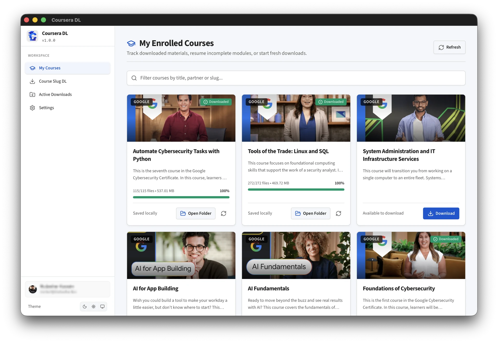
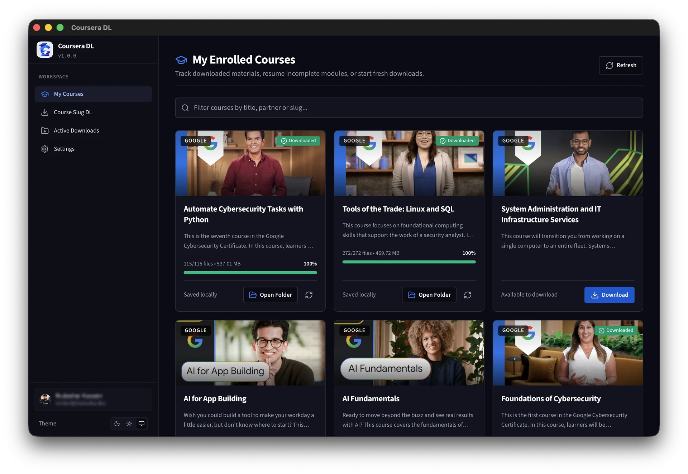

Coursera Course Downloader
& Desktop Backup Tool.
Download Coursera courses for offline use with a high-performance desktop app. Replace broken legacy CLI scripts and save 720p/1080p videos, PDF lecture notes, and subtitles on Windows, Mac, and Linux.


High-Performance Downloading. Zero Hassle.
Coursera DL turns messy scrapers and broken Python terminal setups into a blazing-fast, native desktop application. Keep offline access, prevent data loss, and learn on your terms.
Save Time
1-click full specialization discovery and automated queueing. No manual link copying or terminal debugging.
100% Private
Authentication runs strictly on your local machine using session cookies. Zero telemetry, zero passwords stored.
Native Performance
Engineered with Rust and Tauri v2 for instantaneous start, tiny RAM footprint, and multi-stream resilience.
Modern Desktop UI
A clean, human-readable graphical user interface with theme switching and instant course browsing.
1-Click Direct & Cookie Auth
Choose between seamless 1-Click Coursera browser login or manual session cookie paste for power users.
Course & Specialization Slug DL
Enter any Coursera course or specialization slug directly to analyze and download complete syllabi.
Downloads & Local Library
Manage downloaded courses, inspect completed file counts, resume partial downloads, and open destination folders directly.
Settings & Throttling Preferences
Fine-tune video resolutions (360p to 1080p), random delay ranges, worker threads, storage folders, and session logout.
Rust-Powered Core Engine
Engineered with Tauri v2 and native Rust for minimal RAM footprint, instant launch, and robust multi-part async downloads.
How to Download Coursera Courses: Step-by-Step Guide
Simple, seamless walkthrough to save lecture materials locally and download Coursera videos for offline learning.
Launch App
Open the Coursera DL desktop application on your computer.
1-Click Direct Login
Click "Login with Coursera" in the app window. Log in to your account, and the tool will automatically authenticate your session securely.
Select Courses
View your enrolled course catalog or paste any course slug to inspect the complete syllabus.
Start Downloading
Choose your preferred video quality (720p/1080p), select an output folder, and click "Start Download".
Coursera DL is a free, open-source alternative to legacy coursera-dl Python scripts, designed to eliminate broken scrapers and terminal installation issues with an isolated local workstation GUI.
Frequently Asked Questions
Everything you need to know about Coursera DL, batch downloading, offline video quality, and account safety.
Coursera DL v1.0.0 includes the following features and updates:
- Native Tauri v2 & Rust Engine: Minimal RAM footprint, instant start, and memory safety.
- 1080p & 720p HD Video Downloads: Stream quality auto-selection and chunk-based downloading.
- Multilingual Subtitles: Automatic extraction and parsing of VTT and SRT captions.
- PDF Lecture Slides & Notes: Full course materials and reading assignments downloader.
- 1-Click Specialization Batch Discovery: Discover and batch enroll in multi-course programs.
- Zero Telemetry Security: Local CAUTH cookie authentication with 100% privacy.
- Automated Terminal Installers: One-line install via
install.shandinstall.ps1.
Coursera DL provides two flexible authentication modes:
- 1-Click Direct Coursera Login (Simple & Recommended): Regular users can simply click "Login with Coursera" to open an embedded official login window. The app automatically detects and configures the required session authentication cookie (
CAUTH) upon sign-in. - Manual Cookie Entry (For Power Users): Power users who prefer manual control or want to manage their own sessions can easily export their
CAUTHcookie from their browser and paste it directly into the app.
Privacy & Security: In both methods, your username and password are never stored or intercepted. All credentials and cookies remain encrypted strictly on your local machine with zero data sent to external servers. The codebase is 100% open-source for full transparency.
Yes. Coursera DL automatically parses the highest available MP4 stream (1080p and 720p) and extracts localized subtitles (.vtt and .srt), lecture slides, and supplementary PDFs directly to your specified folder.
Yes. All authentication and network traffic communicate directly and solely between your computer and official Coursera servers. No tokens or account data are ever sent to us or any backend server. Everything is stored locally on your machine, and you can inspect the full source code on GitHub.
Coursera DL is a modern graphical alternative to the legacy coursera-dl Python CLI script. Built with a native Rust backend and Tauri v2 desktop GUI, it provides automatic course discovery, resilient batch downloads, and eliminates complex terminal configurations.
Yes. When enrolled in a Specialization, Coursera DL detects all nested courses and syllabus modules, enabling single-click batch enrollment and batch downloading across all lectures.
Troubleshooting & Common Issues
Quick solutions to resolve session cookie expiration and network timeouts.
🔑 Expired Session Cookie (CAUTH)
If authentication fails or course catalogs appear empty, your Coursera web session has expired. Log in to Coursera in your browser, copy a fresh CAUTH cookie value, and paste it into the app.
⚡ Download Interrupted / Network Reset
Coursera DL supports automatic chunk resuming. Simply restart the course download to resume from where the network connection dropped without re-downloading completed videos.
📂 Read-Only Output Folder Permissions
Ensure the destination folder has write permissions enabled for your user account, especially on external hard drives or network-attached storage (NAS).
Built in Public & Free Forever
Coursera DL is 100% free, open source, and auditable under the GNU General Public License v3.0.
Want to inspect the Rust backend, contribute features, or report issues? Explore the official codebase on GitHub.
Star on GitHub & View RepositoryThis software is an unofficial, community-driven personal course downloading and backup utility. It is strictly intended for personal, educational, offline use and the preservation of learning materials that the end-user already holds legitimate, active, and authorized access to view. The developer does not condone, encourage, or facilitate digital piracy, copyright circumvention, mass redistribution, or commercialization of data. Use of automated tools may violate the target platform's terms of service.
This application is licensed under the GNU General Public License v3.0 (GPL-3.0). As specified in Sections 15 and 16 of the GPL-3.0, this software is provided 'as is' without warranty of any kind, either expressed or implied. The author and contributors assume absolutely no liability or responsibility for any platform-side account restrictions, access bans, token revocations, data loss, or legal actions resulting from the use or misuse of this codebase.